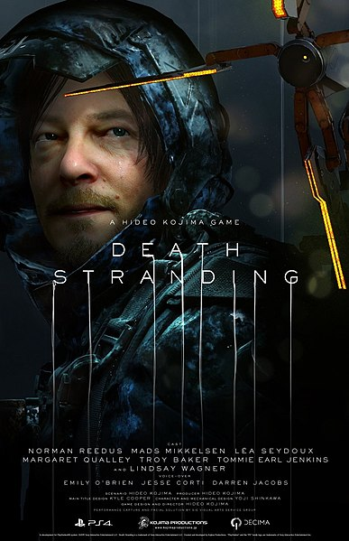

Материал из свободной энциклопедии
 Death Stranding — компьютерная игра в жанре action с открытым миром [5], разработанная студией Kojima Productions для PlayStation 4
(издатель — Sony Interactive Entertainment) и Windows (издатель — 505 Games) [6]. Это первая игра за авторством Хидэо Кодзимы
после его ухода из Konami. В работе над игрой приняли участие актёры Норман Ридус, Мадс Миккельсен, Леа Сейду, Линдси Вагнер и
Трой Бейкер [8], а также режиссёры Гильермо дель Торо и Николас Виндинг Рефн. Выход Death Stranding состоялся 8 ноября 2019 года [9].